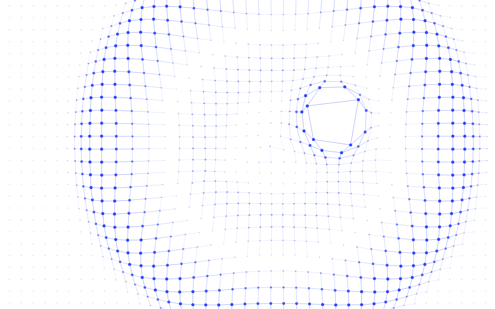

Interactive
Sketches
이미지로 설명하기 어려운 것들을 모아둔 공간입니다. 각 스케치는 독립된 페이지로 실행되며, 클릭하면 그 자리에서 바로 만져볼 수 있습니다. Canvas 2D · p5.js · three.js · Processing 모두 같은 방식으로 올라갑니다.

NO LIBRARY
Grid Field
RUN →Grid Field
CANVAS 2D — 2026
p5.js
TEMPLATE
p5.js Sketch
RUN →p5.js Sketch
TEMPLATE — 기존 p5 코드를 그대로 옮기는 자리
three.js
TEMPLATE · WEBGL
three.js Scene
RUN →three.js Scene
TEMPLATE — 3D · WebGL
PROCESSING
.PDE RUNNER
Processing Runner
RUN →Processing Runner
예전 .pde 파일을 고치지 않고 그대로 실행